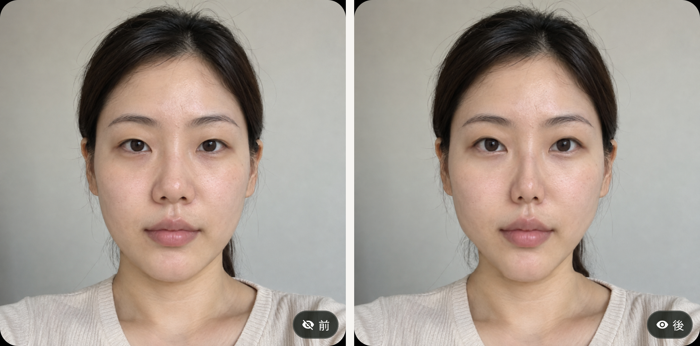
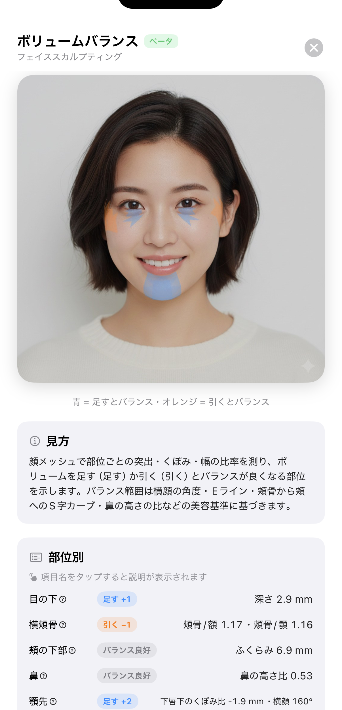
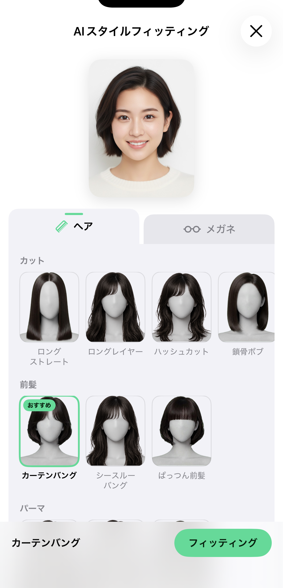
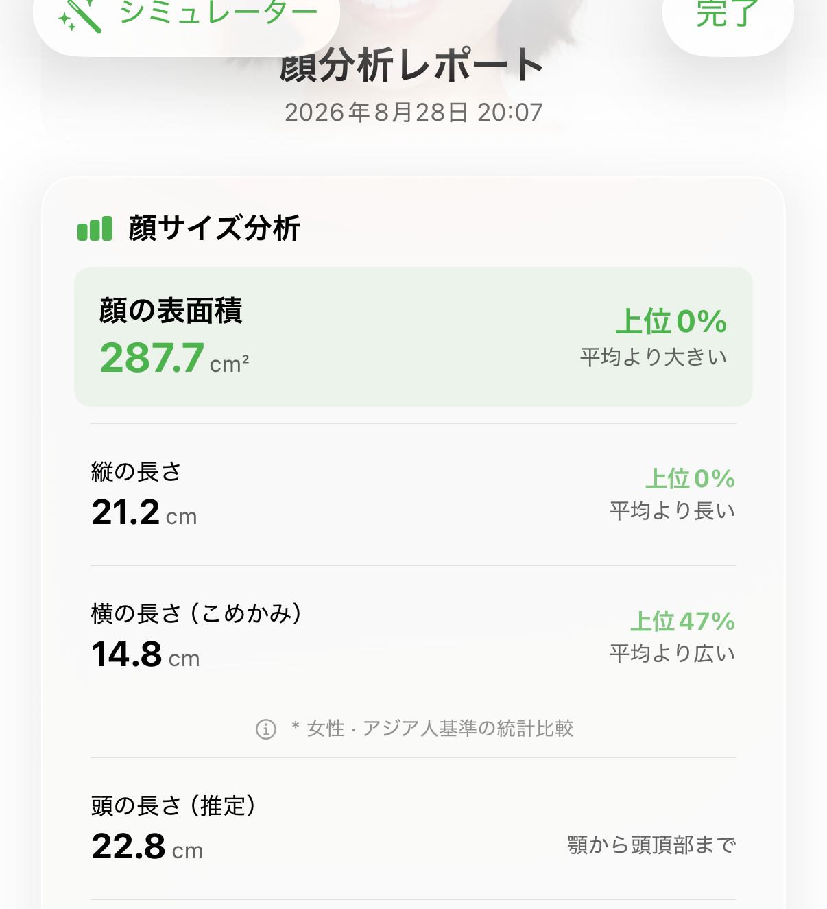
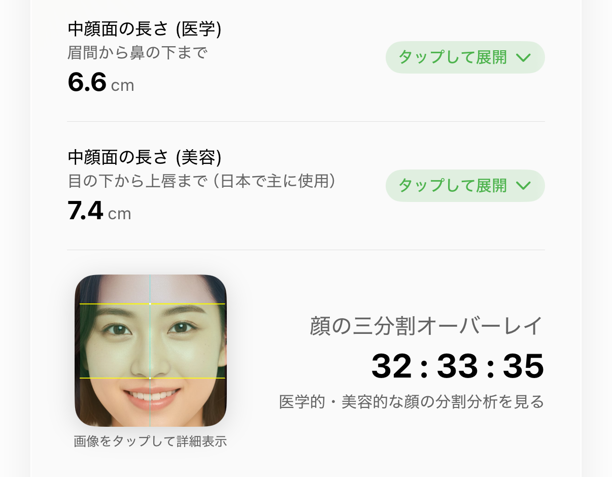
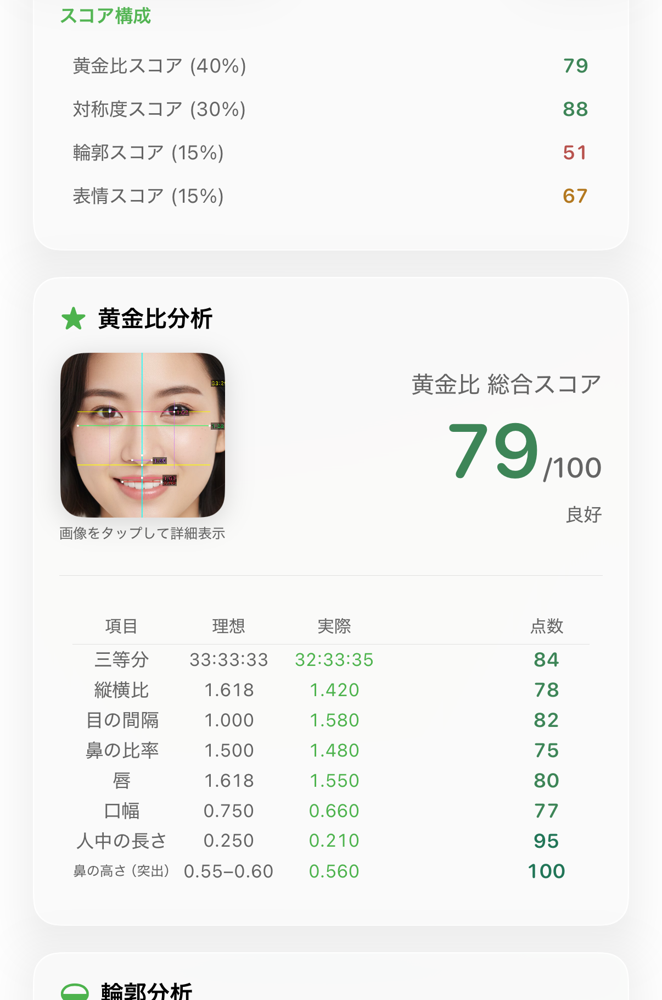
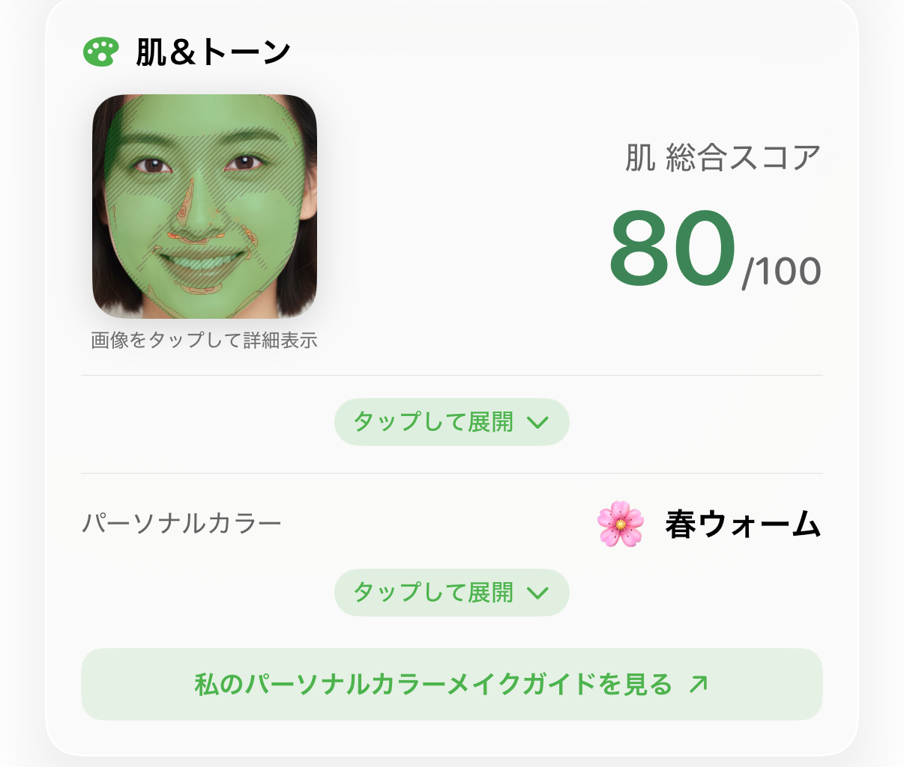

한 줄 소개
Renka는 얼굴을 3D로 측정해서 숫자로 보여주는 앱입니다.
이 앱이 다른 앱과 다른 점
다른 앱들은 평면 사진 한 장을 AI 서버에 보내서 결과를 받아옵니다.
사람이 눈으로 봐도 할 수 있는 판단이에요.
Renka는 얼굴 3D 측정을 씁니다. 사진을 보내는 게 아니라 얼굴의 입체 형태를 직접 잽니다.
그래서 면적·길이·각도처럼 사진으로는 나올 수 없는 값 이 나오고, 측정도 폰 안에서 끝납니다.
촬영 팁 하나 : 측정하는 장면 자체가 좋은 그림입니다.
얼굴을 스캔하는 과정은 결과 화면과 달리 영상으로만 보여줄 수 있고 ,
"3D로 잰다"는 걸 말 없이 증명해줍니다.
최근 새로 들어간 것 (2026년 10월 업데이트)
성형 시뮬레이터

전 / 후 — 末広型二重 80% + 앞트임·애교살·다크서클·코·V라인·입술 약하게 (가상 모델)
내 사진 위에서 30여 가지 시술(눈·코·중안부·턱·입·광대·주름·볼륨)을 슬라이더로 미리 보고 전/후를 바꿔 봅니다.
메뉴 또는 상세 리포트 왼쪽 위 「整形シミュレーター」로 진입.
부탁(일본어판에 적은 것) : ① 「내 사진으로 본 가상 미리보기」로 소개, 실제 시술 결과·효과 보장처럼 말하지 않기
② 「詳しく」 화면의 안내 문구가 보이는 컷 한 번 ③ 병원·의사 소개, 시술 권유, 가격 언급 금지
④ 광고 집행(부스팅) 시 전후 비교 컷은 플랫폼 광고 정책에 걸릴 수 있음.
볼륨 밸런스 · 페이스 스컬팅 (베타)

파랑 = 더하면 균형 · 주황 = 덜어내면 균형 (샘플 리포트 화면)
3D 메시로 10개 부위의 돌출·꺼짐을 mm 단위로 재서 볼륨 균형 지도와 부위별 메이크업 팁을 보여 줍니다.
AI 헤어·안경 피팅

헤어(컷·앞머리·펌·컬러)·안경 선택, 얼굴형 맞춤엔 「おすすめ」
내 사진에 헤어·안경을 AI로 입혀 봅니다. 고르기까지 무료, 합성은 Pro.
그 밖에
눈매·팔자라인·다크서클 수치(눈꼬리 각도·MRD1·팔자 깊이·다크서클 지수)
100일 챌린지 리포트(샘플 리포트로 미리 보기 가능)
뷰티 셀피 실시간 보정이 더 자연스럽게
기능별로 볼 만한 것
순서에 의미는 없습니다.
얼굴 크기

얼굴 표면적 287.7cm² · 세로 21.2cm · 가로 14.8cm (데모 모델 값)
「얼굴이 크다/작다」는 대개 턱끝에서 정수리까지 잰 건데, 그러면 머리카락 두께가 같이 들어갑니다.
Renka는 우리가 임의로 그은 선이 아니라 애플 엔지니어들이 고안한 얼굴 메시 기준 —
얼굴만 덮고 끝나는 그 경계 — 까지를 잽니다. 헤어스타일이 바뀌어도 값이 안 변하고,
누구에게나 같은 기준입니다.
머리 길이 옆에는 「추정」이 붙어 있습니다 — 실측이 아니라 추산값입니다.
중안부 길이
같은 얼굴에 기준이 두 개 입니다. 의학적(미간→코밑) 6.6cm, 미용적(눈밑→윗입술) 7.4cm.
앱 화면에도 미용적 기준에 「日本で主に使用」라고 표시돼 있습니다 — 일본에서 통용되는 그 기준입니다.

의학 6.6cm / 미용 7.4cm · 삼분할 32:33:35
이걸 다룬다면 : 전환할 때 선이 움직여서 설명 없이도 차이가 보입니다.
반응이 제일 좋았던 소재입니다. 라이브 필터에도 같은 기능이 있어서
실시간 화면과 정지 리포트를 같이 보여주면 이해가 빠릅니다.
붓기
이걸 다룰 생각이라면 : 체험 초반부터 하루 한 번씩 재두길 권합니다.
붓기는 자기 과거 측정값과 비교 하는 기능이라 처음 측정은 0으로 나옵니다(기준값이 아직 없어서).
며칠 쌓아두면 「짜게 먹은 다음날」 같은 비교가 만들어집니다.급하면 : 촬영 직전 연속으로 몇 번 측정해도 동작합니다 — 두 번째부터 비교가 나오되,
하루 사이 변화라 차이가 작게 보입니다.
황금비

8개 항목의 「이상값 대 실제값」 대조표
이런 것도 있습니다
퍼스널컬러 · 얼굴형

이걸 다룬다면 : 위의 AI 헤어·안경 피팅 이나 라이브 필터의 피팅을 이어서 보여주면 자연스럽습니다 —
얼굴형 → 어울리는 헤어·안경, 퍼스널컬러 → 어울리는 색.
라이브 필터는 측정 완료 화면에서 진입. (라이브 필터는 스크린샷이 없어 직접 녹화 필요)
칼로리 카메라
음식을 찍으면 칼로리·영양 정보가 나옵니다. 별도 결제 없이 쓸 수 있고 인식은 폰 안에서 돌아갑니다.
Rena AI 상담
측정 결과를 두고 AI와 대화합니다. 측정에서 나온 숫자를 바탕으로 답하는 게 특징.
칼로리 카메라의 Rena 보조 인식은 하루 3회 무료입니다.
시청자가 보는 화면은 다를 수 있습니다
체험 코드로는 Pro 전체 가 열려 있습니다. 일반 사용자는:
측정·기본 결과·칼로리 카메라 — 무료성형 시뮬레이터 — 진입과 일부 시술(앞트임·다크서클·콧볼축소·중안부·V라인·팔자 필러·미간 보톡스·이마 필러) 무료, 나머지 ProAI 헤어·안경 피팅 — 고르기까지 무료, 합성은 Pro상세 리포트 (볼륨 밸런스·100일 리포트 포함, 위 스크린샷 대부분) — Pro. 앱 안 「샘플 리포트」로 누구나 미리 보기 가능라이브 필터 — 매일 무료 횟수, 그 이상 Pro
댓글에 「이 화면 왜 안 나와요?」가 달리면 "상세 리포트는 Pro 기능"이라고 답하면 됩니다.
측정은 폰 안에서 끝납니다. 사진을 서버에 올리지 않습니다.
iPhone·Android 둘 다 있습니다.
점수에 대해 : 「점수는 별로 쓸모없다」 각도로 가도 괜찮습니다 — 저희도 그렇게 말합니다.
한 가지 부탁 : 측정 결과를 「이 부위는 고쳐야 한다」로 연결하지 않기. 「이 부위가 이러면 이렇게 보인다」까지.
성형 시뮬레이터는 「가상 미리보기」로만 — 실제 시술 후기·효과처럼 보이지 않게.
해시태그
필수: #Renka3D — 이것 하나는 꼭 넣어 달라고 요청합니다.
우리가 게시물을 찾아 공식 계정에서 소개·응원하는 데 씁니다.
(#Renka 만으로는 다른 게시물에 묻혀서 3D 를 붙였습니다.)
사무소·캐스팅 회사 등 리뷰 업체에서 해시태그를 지정했다면 그쪽이 우선입니다.
아래는 그다음 순서의 권장 목록입니다. 지정과 겹치거나 자리가 모자라면 빼도 됩니다(유행은 변하니 참고 정도로).
지정이 있어도 #Renka3D 는 함께 넣어 달라고 적었습니다.
전반 : #垢抜け #自分磨き #美容 #顔タイプ診断 #パーソナルカラー診断소재별 : 얼굴 크기 → #小顔 #フェイスライン / 중안부 → #中顔面 /
붓기 → #むくみケア / 컬러 → #パーソナルカラー #イエベ #ブルベ /
헤어·안경 → #似合う髪型 #メガネ選び / 시뮬레이터 → #整形シミュレーター시술 후기·병원 계열 태그(#整形垢, 클리닉 이름 등)는 금지 — 위의 부탁과 같은 이유.
리소스
체험 코드 — 코드는 별도 전달. iPhone 은 교환 링크를 기본 Safari 에서 열기(LINE·Instagram 앱 안 브라우저는 안 넘어갈 수 있음)
또는 App Store → 프로필 → 「ギフトカードまたはコードを使う」에 직접 입력. 이미 체험·구독 중인 Apple ID 는 애플이 거절.
Android 는 앱 내 「プロモーションコード」에 입력.
링크로도 안 될 때(iPhone) : ① 앱 최신 버전 업데이트 ② 메뉴 「設定・アプリ情報」 → 「サブスクリプション」 아래 「サポートID」 탭해 복사
③ bernard@fattaillabs.com 또는 사무소·캐스팅 회사 담당자를 통해 전달 → 저희가 RevenueCat 에서 Pro(1년) 개통
④ 「개통 완료」 연락을 받으면 앱을 완전히 껐다 켜기.
위치 캡처
Android 사용자의 경우 앱을 삭제하면 무료 사용 혜택이 해지될 수 있습니다. 그런 경우 다시 코드를 입력해 주시고,
그래도 안 될 경우 bernard@fattaillabs.com 으로 연락해 주세요.
가급적 체험 기간 내에는 앱을 삭제하지 않는 것을 권고합니다.